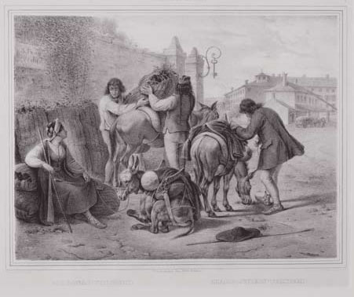

În documente venețiene vechi, morlaci sunt atestați, la începuturi, ca păstori, ocupația care în timp avea să dispară
Pe baza teoriilor pe care le-au lansat numeroșii istorici, filologi și lingviști amintiți, dar mai ales Emil Petrovici, referitoare la formarea poporului și a limbii române, precum și pe baza lucrărilor apărute până acum despre vlahii balcanici și limba lor, lingvistul croat August Kovačec (n.1938) în studiul Descrierea istroromânei actuale (București, 1971, p. 31-32), ajunge la următoarea concluzie cu privire la locul valhilor balcanici și al istroromânilor printre ceilalți români:
1. Numeroasele concordanțe - în toate compartimentele limbii - dintre dacoromână, istroromână, meglenoromână și aromână arată că aceste idiomuri s-au dezvoltat dintr-o limbă balcanică unică, diferită de celelalte limbii romanice și de dalmată, din româna comună. Cele patru idiomuri dezvoltate din româna comună trebuie considerate dialecte ale limbii române (E.Petrovici, Unitatea dialectală a limbii române, Sinaia, 1963, p.9).
2. Deosebirile lingvistice importante dintre română și dalmată arată că locul de formare a popoului și limbii române trebuie căutat în partea de est a Peninsulei Balcanice, cât mai departe de Dalmația (E.Petrovici, op. cit., p. 10). Izvorul numeroaselor concordanțe dintre albaneză și română trebuie căutat în moștenirea balcanică comună și nu în faptul că cele două popoare și limbi s-au format pe același teritoriu (C.Daicovicu, E. Petrovici, Gh. Ștefan, La formation du peuple roumain et de sa langue, București, 1963, p. 59).
3. Dat fiind că în materialul lingvistic (toponimie și antroponimie) pe care ni l-au lăsat vlahii balcanici găsim printre elementele slave numai elemente de tip sud-slav răsăritean (E.Petrovici, Le probléme des Roumains "occidentaux", în "Revue de linguistique", VI, 1961, 1, p. 27), în timp ce elemente vechi sârbești nu există (elementele slave mai noi sunt de tip croat čakavian), locul de formare a limbii române comune trebuie căutat la est de linia care desparte bulgara de sârbă, linie care aproape se suprapune cu granița bulgaro-iugoslavă (E.Petrovici, op. cit., p. 11, 13).
4. Acest teritoriu a fost mărginit la sud de linia lui Jireček-Skok, la est de Marea Neagră și granița estică a Daciei, la nord de granița nordică a Daciei, iar la sud de Dunăre de granița amintită la pct. 3 (E. Petrovici, op. cit., p. 13; Istoria României, I, București, 1960, p. 775). Pe întreg acest teritoriu a trăit o populație romanică și traco-moesică romanizată, împreună cu slavii.
5. Strămoșii românilor au trăit pe acest teritoriu mai cu seamă de o parte și alta a cursului inferior al Dunării, între Haemus și Carpați, fiind în majoritate păstori transhumanți care-și petreceau vara cu turmele în munții din stânga și dreapta marelui fluviu, iar iarna în lunca lui. Prin urmare, contactul dintre populațiile de pe ambele maluri ale Dunării a fost foarte viu și neîntrerupt.
6. De pe acest teritoriu s-au desprins membrii celor trei grupe sud-dunărene de români, ca păstori nomazi. Dat fiind că strămoșii istroromânilor s-au despărțit cel mai târziu, dialectul lor prezintă cele mai multe trăsături comune cu dacoromâna."
Iată mai multe opinii care în timp au iscat numeroase controverse cu privire la originea populației vlahe din Croația, de pe litoralul adriatic îndeosebi. În ultima vreme, istoricii încearcă să găsească o soluție de compromis, respectiv o "cale de mijloc." Amintim încercarea Elenei Scărlătoiu (Istroromânii și istroromâna. Relațiile lingvistice cu slavii de sud, București, 1998), care consideră că "marea masă a strămoșilor istroromânilor provine din regiunile septentrionale ale Peninsulei Balcanice și că ar fi existat mai multe nuclee situate atât în părțile centrale, de vest și de nord-est ale Transilvaniei, cât și la sud de Dunăre cu precădere în zona Timoc - Prizren." Oricum, adevărul este că noi încă nu dispunem de o concepție acceptată unanim despre originea urmașilor vlahior balcanici medievali, a morlacilor de pe coasta adriatică și insulele Krk, Pag, Cres, Rab, dar nici despre rădăcinile instrovlahilor, respectiv ale istroromânilor din Istria.
Considerații asupra modului de viață, datinilor și tradițiilor morlacilor din Dalmația
În documente venețiene vechi morlacii sunt atestați la început ca păstori, ocupație care avea să dispară în timp. Vara o petreceau în munți, căutând pășuni bogate, iar iarna coborau cu turmele în văile râurilor și în spatele orașelor dalmate, în așa-numitele cătune, unde restul populației vlahe practica agricultura, deși suprafețele cultivate de ei nu erau prea întinse. Oricum, păstoritul, datorită pășunilor bogate din Munții Velebit, Dinara și Durmitor, a constituit o dimensiune importantă a exsitenței lor. Cătunele respective își aveau, de altfel, căpetenia lor, care de obicei se numea cătunar. Îi mai zicea și cnez sau celnic. Mărimea cătunului varia după numărul gospodăriilor, având, de obicei, între zece și treizeci de case. Fiecare gospodărie avea obligația ca în conformitate cu mărimea averii să plătească tribut pentru bărbații adulți și să lucreze benevol, mai multe zile pe an, averile marilor proprietari sau să transporte sare în orașele din interior. Din unele documente istorice din Arhivele Dubrovnikului, reiese că păstorii vlahi, docili și de încredere, făceau servicii persoanelor care împrumutau animale de tracțiune pentru transportul negustorilor...

În spatele orașelor dalmate, populația de păstori vlahi a devenit factorul determinat al vieții din aceste teritorii32 . Vlahii au avut influență covârșitoare asupra sistemului de dezvoltare economică în ținuturile în care erau domicilicați, deoarece creșterea animalelor era principala lor îndeletnicire. De altfel, ei au reprezentant un factor politic și social important și în spațiul adriatic33. Vlahii erau aprovizionau populația orășenească de pe litoral cu lapte, brânză, carne, fructe și legume, lemne și cărbuni. Cu timpul, păstorii vlahi au devenit negustori. Mulți dintre ei s-au mutat la oraș, devenind cărățași sau marinari. Aceștia erau "vlahii buni", cum sunt numiți în izvoarele istorice croate. Au mai existat și cei înfrățiți cu jaful - rebeli, haiduci, hoți de drumul mare. Este vorba de vlahii colonizați în aceste ținuturi de către turci, din interiorul imperiului, care au lupat în oastea otomană. Unii dintre ei au format unități speciale, cum au fost martolozii și derbengedii, cu leafă și privilegii, vlahii ce incendiau, ucideau, jefuiau și duceau în sclavie turcească populația din teritoriile cucerite. În urma bătăliilor purtate, majoritatea dintre ei erau lăsați în voia sorții, fără beneficii și bani, până la noi bătălii, doar să apere granițele Imperiului. Pentru această slujbă erau eliberați de impozite, primind doar spre folosire casele și pământul celor refugiați, foștii lor confrați creștini. Nu toți dintre acești martolozi se mulțumeau cu îndeletnicirile impuse, astfel că mulți dintre ei s-au haiducit. Alții au trecut pe teritoriul Republicii Veneția, de unde atacau și jefuiau satele din zona de frontieră ori se încadrau în armata venețiană, care le dăruia averi în regiunile ocupate. Martolozii vlahi nu erau obișnuiți să lucreze, respectiv să cultive pământul primit astfel că între două bătălii își continua de obicei, vechea pasiune: haiducia.
Unii dintre ei, din cauza conflictelor și neînțelegerilor cu populația băștinașă, s-au întors de unde au venit, majoritatea în Lika. Pentru a opri întoarcerea lor, comandantul Armatei venețiene în Dalmația, general Foscolo, a ordonat ca satele acestora să fie incendiate, astfel că vlahii veniți aici nu aveau decât să se adapteze noilor condiții de viață. La graniță sau în apropierea ei, timpul a șters diferențele etnice între morlaci și băștinași, care au conviețuit. Vlahii catolici, au deveniz croați, iar cei ortodocși - sârbi.
Adevărul este că acești "morlaci răi", cum erau caracterizați unii dintre ei, nu erau bine priviți de autoritățile venețiene, dar nici de cele italiene, ei fiind neascultători, răzbunători, necruțători. Așa erau considerați fiindcă nu erau suficient de cunoscuți. Despre ei, dar nici depspre viața grea pe care au dus-o în munți, nu s-au știut multe până pe la jumătatea secolului al XVIII-lea, când s-au făcut cunoscuți și în afara regiunilor în care au trăit, datorită mai multor scriitori care i-au vizitat și au scris despre morlaci și care au rămas impresionați de lumea romantică și de virtuțiile lor: Alberto Fortis, Ivan Lovrić, Prosper Mérinée, Marko Kažotić, Charles Nodier... Îi fascina viața patriarhală, viața în comun, portul original (bonetă roșie pe cap, plăcuțe de argint pe piept, pușca pe umăr, cuțitul sau paloșul la brâu), ospitalitatea morlacă, respectarea ultimului cuvânt, înfrățirea între ei (frați de cruce), superstițiile (zâne, ursitoare, vârcolaci și alte fenomene supranaturale). Din imaginea romantică a vieții morlacilor dalmați a apărut moralchimul, ale cărui rădăcini sunt inventate de ideologii europeni ai romantismului în poezia populară pe care morlacii o ascultau tradițional, adunați în jurul unui guslarului orb, ca și grecii antici. Această poezie a devenit foarte populară în Europa după ce Fortis a tradus Hasanaghinița în limba italiană, iar Werthes în limba germană, în care a ajuns și până la marele Johann Wolfgang Goethe. Intelectualitatea orășenească , sătulă și epuizată de așa-numita cultură și de dialogul saloanelor, îi asemănau acum pe morlaci cu eroii lui Homer!
Costa Roșu
Note
Dabinović, A., Orașul Kotor în Războiul al doilea de la Skutari (14,9), Zagreb, 1937, p. 137-139
Istorija srpskog naroda I, Istoria poporului sârb, Beograd, 1994, p. 365
Bogović, Mile, Biserica Catolică și Ortodoxia în Dalmația în perioada stăpânirii venețiene, Zagreb, 1982, p. 16
Fortis, Alberto, Călătorie în Dalmația, Zagreb, 1984, p. 31
March 22, 2014
© 2014 Libertatea